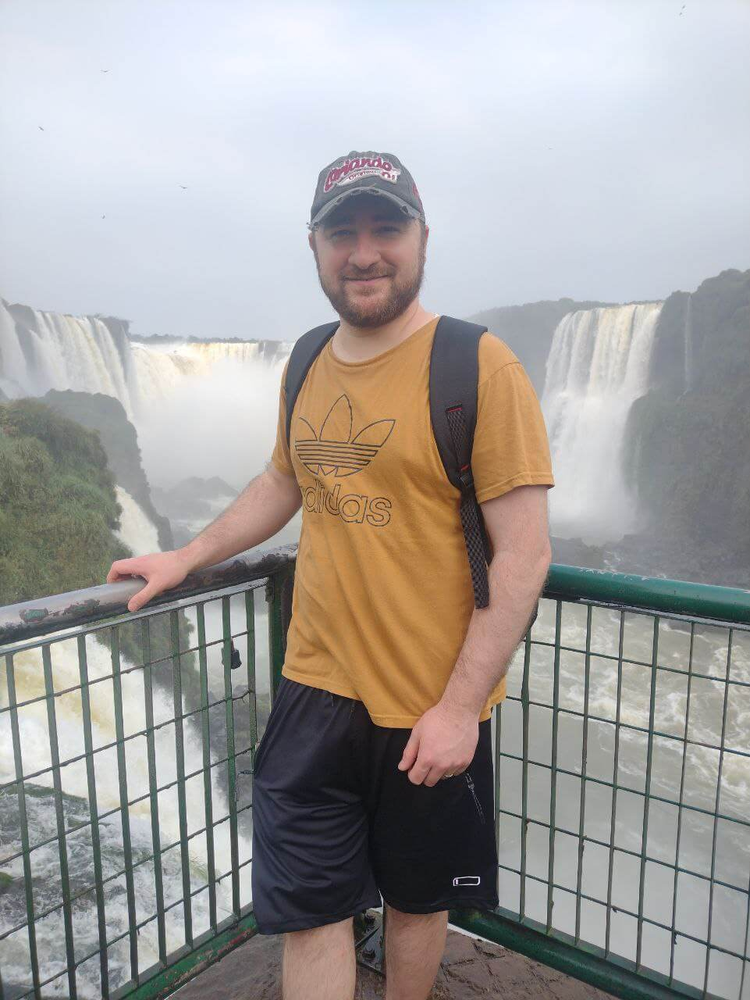
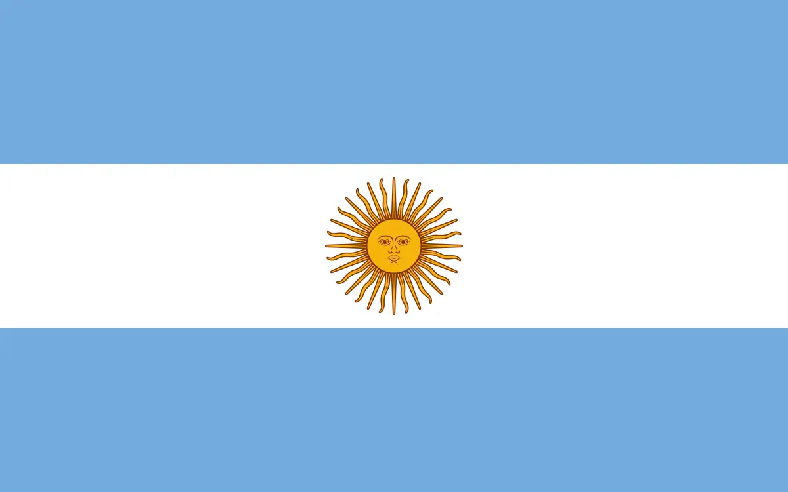

My name is Martin Moltó. I am from Mendoza, Argentina, I am 33 years old and I study Software Development. I have been married since 2015 and I like to travel and play sports.
About Me

Mendoza, Argentina

Mendoza is a city in western Argentina and capital of the province of the same name . It is located on the plain east of the Andes mountain range. It is one of the main cities in the co and with its urban aglomeration, called Greater Mendoza, it reaches a total population of over one Its surface area is 57 km², although its metropolitan area extends to 168 km².